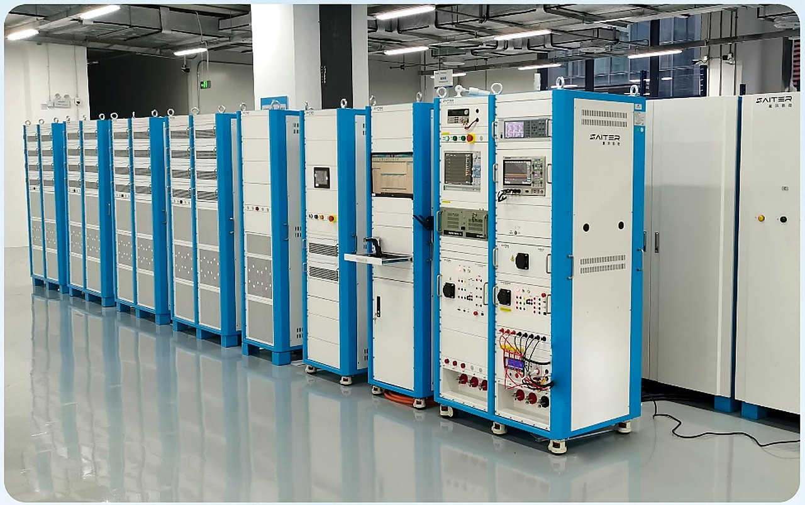
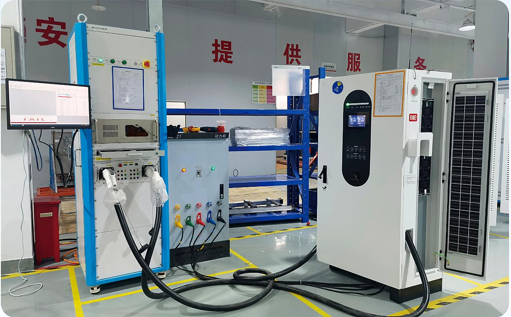
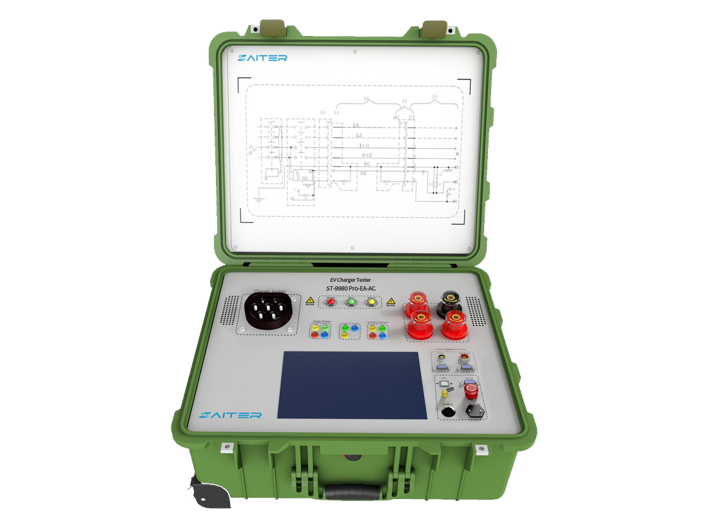
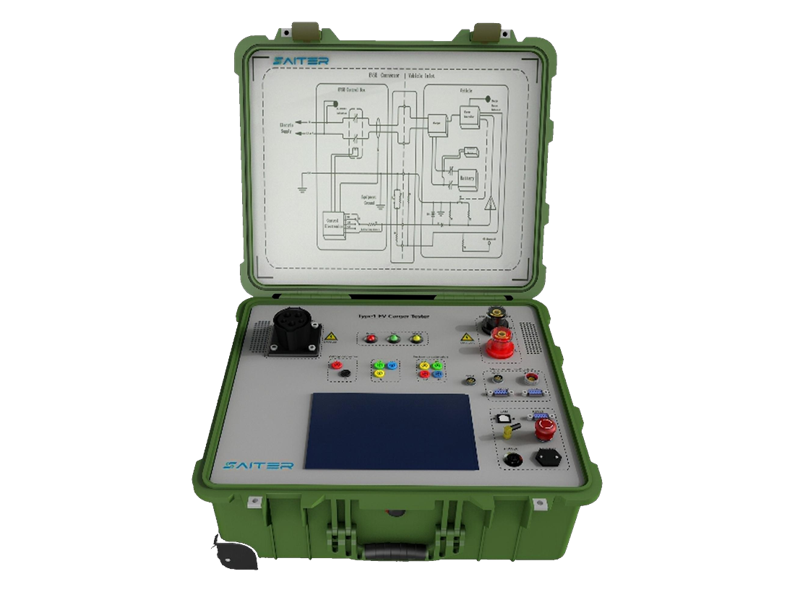
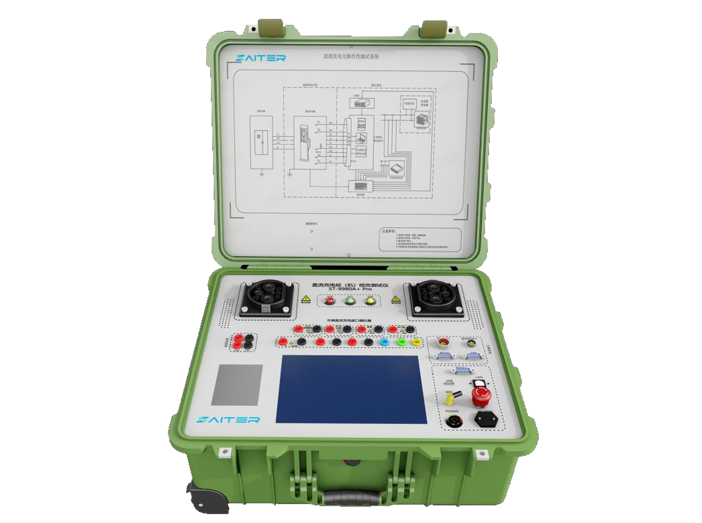
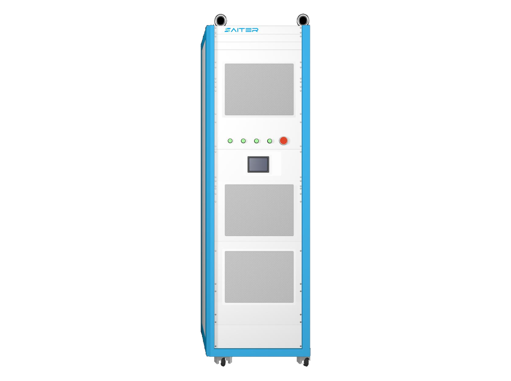

AC Charger Tester
ST-9980 Pro-EA-AC
Portable Type 2 AC EV charger comprehensive tester for interoperability and on-site metering verification.
Charger Testing. Grid Feedback. Field Validation.
Professional EV charger testing equipment, EVSE analyzers, charging simulators, and compliance validation systems for manufacturers, laboratories, and EV infrastructure companies worldwide.


About Us
Apex Power Systems supplies EV charger test instruments and power electronics systems for demanding charger validation environments. Our portfolio covers AC charger testers, DC charger testers, NACS interface analyzers, and regenerative DC electronic loads.
From product selection to field test workflows, we focus on practical systems that improve charger testing accuracy, fault diagnosis, safety verification, and long-term reliability.
Protocol, metering, waveform, safety simulation, and load testing support for AC/DC charger validation.
Industrial-grade charger testers and regenerative loads selected for accuracy, durability, and serviceability.
Commissioning tests, troubleshooting workflows, maintenance verification, and technical support for sustained charger performance.
Products
Select a product below to review translated English specifications, core capabilities, and product imagery extracted from the original technical brochures.
Portable Type 2 AC EV charger comprehensive tester for interoperability and on-site metering verification.
Portable Type 1 AC charger tester developed for North American AC charging standards and field testing.
Portable DC charger comprehensive tester supporting protocol conformance, interoperability, and metering tests.
DC charging interface tester for NACS applications with monitoring, simulation, and message analysis functions.
High-power regenerative DC electronic load for EV charger testing, aging tests, and bidirectional power workflows.

Portable AC EV charger tester designed for Type 2 charging piles. It supports interoperability testing, on-site metering verification, stable anti-interference testing, searchable test data, and safe portable operation in complex field environments.

Portable Type 1 AC charger tester with interoperability and field metering verification functions. The system is designed for North American charging applications with stable testing, data query capability, safety protection, and rugged portable use.

Portable DC EV charger comprehensive tester with communication protocol conformance, interoperability testing, and on-site metering verification. It supports the latest GB/T 27930.2-2024 standard for advanced charger validation.
DC charging interface tester for North American Charging Standard applications. The modular protected case integrates monitoring, simulation, waveform acquisition options, message analysis, and safety protection for DC charging interface validation.

The STELR regenerative DC electronic load uses DCDC control and PWM inverter technology with dual DSP control. It delivers high-performance full-power energy feedback to the grid, improving energy efficiency compared with conventional DC loads.
Solutions
End-of-line validation for AC/DC charger manufacturers, covering protocol behavior, metering accuracy, safety functions, and production test records.
Repeatable charger test workflows for standards evaluation, pre-certification preparation, interoperability checks, and detailed message analysis.
Field-ready instruments for checking installed chargers before operation, including interface behavior, power output, and fault simulation.
Portable diagnostic tools for service engineers maintaining charging piles, isolating charger faults, and verifying repair quality.
Contact Us
Share your charger type, target standard, voltage and current range, and testing scenario. Our team will recommend a suitable test solution.